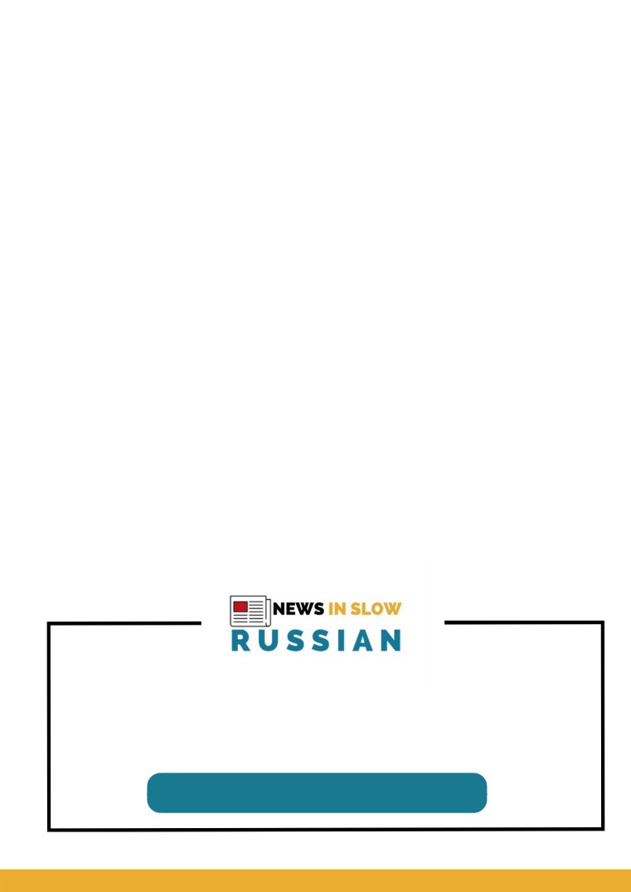
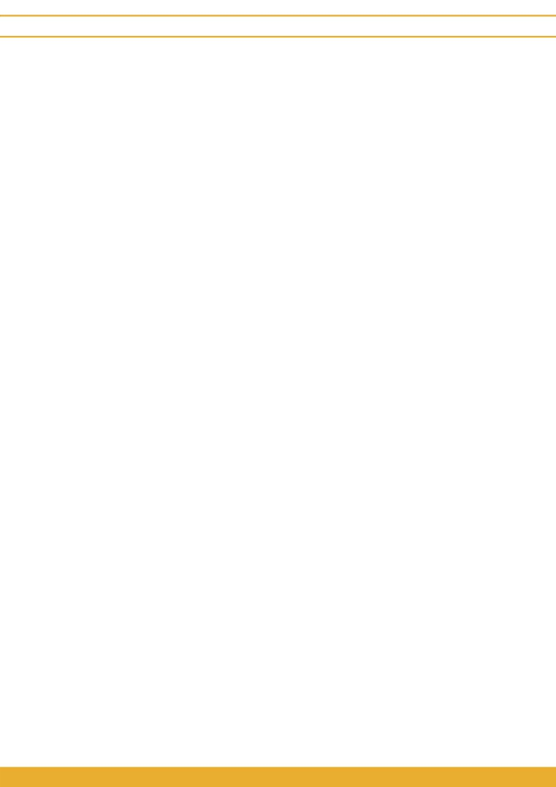

WORD
BOOK
1500 Most Common
Russian Words
© News in Slow Russian
NEWSINSLOWRUSSIAN.ORG

Preface
This book is designed specifically for News in Slow Russian podcast and it
Level 1 news articles from News in Slow Russian consist almost exclusively of
With News in Slow Russian, you can significantly improve your listening
skills and build vocabulary in a stress-free way. This program is designed for
busy people, so if you have only 20 minutes a day and you´re eager to finally
bring your Russian to a new level, welcome!
NEWSINSLOWRUSSIAN.ORG
WORD BOOK
NEWS IN SLOW RUSSIAN
Parts of speech
noun - a name word;
verb - an action word;
adj. (adjective) - a describing word;
adverb - a describing word;
prep. (preposition) - a word used to show a relation;
pronoun - a word used in place of a noun;
conj. (conjunction) - a joining word;
numeral - numbers.
NEWSINSLOWRUSSIAN.ORG
WORDBOOK
NEWS IN SLOW RUSSIAN
A
Абсолютно - (adverb) absolutely
Август - August
Автор - (noun) an author
Адрес - (noun) an address
Актёр - (noun) an actor
Активный - (adj.) active
Алкоголь - (noun) an alcohol
Анализ - (noun) an analysis
Ананас - (noun) a pineapple
Английский - (adj.) English
Апрель - April
Арест - (noun) an arrest
Арестовывать / арестовать - (verb) to arrest
Артист - (noun) an artist, an actor
Аэропорт - (noun) an airport
NEWSINSLOWRUSSIAN.ORG
WORD BOOK
NEWS IN SLOW RUSSIAN
Б
Багаж - (noun) a luggage
Борьба - (noun) a fight
База - (noun) a base
Бояться - (verb) to be afraid of
Бал - (noun) a ball
Брат - (noun) a brother
Банан - (noun) a banana
Брать / взять - (verb) to take
Банк - (noun) a bank
Бросать / бросить - (verb) to throw; to
Бассейн - (noun) a pool
give up
Бедный - (adj.) poor
Будущее - (noun) a future
Бежать / побежать - (verb) to run
Будущий - (adj.) future
Без - (prep.) without
Булочка - (noun) a bun
Безопасность - (noun) a safety
Бумага - (noun) a paper
Безопасный - (adj.) safe
Бутылка - (noun) a bottle
Белый - (adj.) white
Бывать / побывать - (verb) to visit
Берег - (noun) a bank, a shore
Бывший - (adj.) former
Бизнес - (noun) a business
Быстро - (adverb) quickly
Благодаря - (prep.) thanks to, due to
Быстрый - (adj.) quick
Близкий - (adj.) close, near
Быть - (verb) to be
Боб - (noun) a bean
Бог - (noun) a god
Более - (adverb) more
Боль - (noun) a pain
Больше - (adverb) more
Больший - (adj.) bigger
Большинство - (noun) a majority
Большой - (adj.) big
NEWSINSLOWRUSSIAN.ORG
WORD BOOK
NEWS IN SLOW RUSSIAN
В
В - (prep.) in
Видимо - it seems
В течение - (adverb) during
Видно - it can be seen
Важный - (adj.) important
Вкус - (noun) a taste
Ванная - (noun) a bathroom
Вкусный - (adj.) tasty
Вариант - (noun) an option
Владелец - (noun) an owner
Вдохновлять / вдохновить -
Власть - (noun) power
(verb) to inspire
Влияние - (noun) an influence
Вдруг - (adverb) suddenly
Влиять / повлиять - (verb) to influence
Век - (noun) a century
Вместе - (adverb) together
Величина - (noun) a size
Вместо - (prep.) instead
Велосипед - (noun) a bike
Внешний - (adj.) external, outside
Вера - (noun) faith
Внимание - (noun) attention
Верить / поверить - (verb) to believe
Внутренний - (adj.) inner
Вес - (noun) weight
Внутри - (adverb) inside
Весить - (verb) to weigh
Внучка - (noun) a granddaughter
Весьма - (adverb) extremely, pretty
Вовсе - (adverb) at all, completely
Ветер - (noun) wind
Вода - (noun) water
Вечер - (noun) an evening
Военный - (adj.) military
Вещь - (noun) a thing
Возвращаться / вернуться - (verb) to
Взгляд - (noun) a glance, a look
return
Взрослый - (adj.) mature, grown-up
Воздух - (noun) air
Взять - (verb) to take
Возможно - (adverb) maybe
Вид - (noun) view; kind, sort
Возможность - (noun) a possibility, a
Видео - (noun) a video
chance
Видеть / увидеть - (verb) to see
Возможный - (adj.) possible
NEWSINSLOWRUSSIAN.ORG
WORD BOOK
NEWS IN SLOW RUSSIAN
В
Возникать / возникнуть - (verb) to
Вставать / встать - (verb) to stand up, to
appear
get up
Возраст - (noun) an age
Встреча - (noun) a meeting
Война - (noun) a war
Встречать(ся) / встретить (ся) -
Вокруг - (adverb) around
(verb) to meet
Волос - (noun) a hair
Вторник - Tuesday
Воля - (noun) a will
Второй - the second
Вообще - (adverb) at all
Вулкан - (noun) a volcano
Вопрос - (noun) - a question
Входить / войти - (verb) to enter
Восемь - eight
Вчера - (adverb) yesterday
Восемьдесят - eighty
Выбирать / выбрать - (verb) to choose
Воскресенье - Sunday
Выбор - (noun) a choice
Восток - (noun) east
Вывод - (noun) a conclusion
Восточный - (adj.) eastern
Выглядеть - (verb) to look
Восьмой - the eighth
Вызывать / вызвать - (verb) to cause
Впервые - (adverb) for the first time
Выигрывать / выиграть - (verb) to win
Вперёд - (prep.) forward, ahead
Высокий - (adj.) high
Впечатление - (noun) an impression
Высота - (noun) height
Враг - (noun) an enemy
Высший - (adj.) top, highest
Врач - (noun) a doctor
Выход - (noun) an exit
Время - (noun) time
Выходить / выйти - (verb) to go out
Всё|Все - (pronoun) all
Всего - (adverb) in total, altogether
Вспоминать / вспомнить - (verb)
to recall
NEWSINSLOWRUSSIAN.ORG
WORD BOOK
NEWS IN SLOW RUSSIAN
Г
Газета - (noun) a newspaper
Герой - (noun) a hero
Глава - (noun) a head; a chapter
Главный - (adj.) main
Глаз - (noun) an eye
Глубокий - (adj.) deep
Глупый - (adj.) silly
Говорить / сказать - (verb) to
speak
Год - (noun) a year
Голова - (noun) a head
Голос - (noun) a voice
Гора - (noun) a mountain
Гораздо - (adverb) far, much more
Город - (noun) a city, a town
Городской - (adj.) town, city, urban
Господин - (noun) mister
Гость - (noun) a guest
Государственный - (adj.) state
Государство - (noun) a state
Готовить / приготовить - (verb) to
prepare; to cook
Готовый - (adj.) ready
Гражданин - (noun) a citizen
Граница - (noun) a border
Группа - (noun) a group
NEWSINSLOWRUSSIAN.ORG
WORD BOOK
NEWS IN SLOW RUSSIAN
Д
Давать / дать - (verb) to give
День - (noun) a day
Давно - (adverb) long time ago
Деньги - (noun) a money
Далее - (adverb) further
Деревня - (noun) a village
Далеко - (adverb) far
Дерево - (noun) a tree
Данные - (noun) data
Держать / подержать - (verb) to hold,
Данный - (adj.) this, given
to keep
Два - two
Десятый - the tenth
Двадцать - twenty
Десять - ten
Дверь - (noun) a door
Детский - (adj.) childish
Двигаться / подвинуться - (verb)
Дешёвый - (adj.) cheap
to move
Деятельность - (noun) an activity
Движение - (noun) a movement
Диван - (noun) a sofa
Двор - (noun) a yard
Дикий - (adj.) wild
Девочка - (noun) a girl
Директор - (noun) a director
Девушка - (noun) a girl
Длина - (noun) a length
Девяносто - ninety
Длинный - (adj.) long
Девятый - the ninth
Добавлять / добавить - (verb) to add
Девять - nine
Добрый - (adj.) kind
Действие - (noun) an action
Довольно - (adverb) enough; rather
Действительно - (adverb) really
Договор - (noun) a contract, a treaty
Действовать / подействовать -
Дождь - (noun) a rain
(verb) to act
Доктор - (noun) a doctor
Декабрь - December
Документ - (noun) a document
Делать / сделать - (verb) to do
Долгий - (adj.) long
Дело - (noun) a business
Долго - (adverb) for a long time
NEWSINSLOWRUSSIAN.ORG

WORD BOOK
NEWS IN SLOW RUSSIAN
Д
Должен - (modal verb) must
Доллар - (noun) a dollar
Дом - (noun) a house
Дорога - (noun) a road
Дорогой - (adj.) expensive
Достаточно - (adverb) enough
Достигать / достичь - (verb) to
reach
Дочь - (noun) a daughter
Друг - (noun) a friend
Думать / подумать - (verb) to think
Душа - (noun) a soul
NEWSINSLOWRUSSIAN.ORG
WORD BOOK
NEWS IN SLOW RUSSIAN
Е / Ё
Еда - (noun) a food
Единственный - (adj.) the only
Единый - (adj.) one, joint
Ежегодный - (adj.) annual
Ёлка - (noun) Christmas tree
Естественно - (adverb) naturally
Есть / съесть - (verb) to eat
Ехать / поехать - (verb) to go, to
ride
Ещё - (adverb) still, yet
NEWSINSLOWRUSSIAN.ORG
WORD BOOK
NEWS IN SLOW RUSSIAN
Ж
Ждать / подождать - (verb) to wait
Желание - (noun) a desire
Желать / пожелать - (verb) to
want, to desire
Жёлтый - (adj.) yellow
Жена - (noun) a wife
Женский - (adj.) female, woman,
feminine
Женщина - (noun) a woman
Живой - (adj.) alive
Животное - (noun) an animal
Жизнь - (noun) a life
Житель - (noun) an inhabitant, a
resident
Жить / прожить - (verb) to live
Журнал - (noun) a magazine, journal
NEWSINSLOWRUSSIAN.ORG
WORD BOOK
NEWS IN SLOW RUSSIAN
З
Забывать / забыть - (verb) to forget
Защищать / защитить - (verb) to
Зависеть - (verb) to depend
protect
Завтра - (adverb) tomorrow
Заявлять / заявить - (verb) to state,
Задача - (noun) a task
to announce
Заканчивать / закончить - (verb) to
Звать / позвать - (verb) to call
finish
Звезда - (noun) a star
Закон - (noun) a law
Звонить / позвонить - (verb) to call
Закрывать / закрыть - (verb) to
Звук - (noun) a sound
close
Здание - (noun) a building
Зал - (noun) a hall
Здоровье - (noun) a health
Замечать / заметить - (verb) to
Зелёный - (adj.) green
notice
Земля - (noun) Earth, ground
Занимать / занять - (verb) to take, to
Зимний - (adj.) winter
occupy
Змея - (noun) a snake
Заниматься / заняться - (verb) to be
Знак - (noun) a sign
engaged
Знакомый - (adj.) familiar
Занятие - (noun) an occupation
Знаменитый - (adj.) famous
Запад - (noun) west
Знание - (noun) knowledge
Западный - (adj.) western
Знать / узнать - (verb) to know
Запрещать / запретить - (verb) to
Значение - (noun) meaning
prohibit
Значить - (verb) to mean
Заставлять / заставить - (verb) to
Зрение - (noun) an eyesight
force
Затем - (adverb) then
Зачем - what for
Защита - (noun) protection
NEWSINSLOWRUSSIAN.ORG
WORD BOOK
NEWS IN SLOW RUSSIAN
И
Игра - (noun) a game
Искать / отыскать - (verb) to seek,
Играть / сыграть - (verb) to play
to look for
Идея - (noun) an idea
Искусство - (noun) an art
Идти / прийти - (verb) to go
Использование - (noun) a usage
Известный - (adj.) famous, known
Использовать - (verb) to use
Из-за - (prep.) because of
Исследование - (noun) a study, a
Изменение - (noun) a change
research
Изменять / изменить - (verb) to
Исследователь - (noun) a reseacher
change
Исторический - (adj.) historical,
Изобретать / изобрести - (verb) to
historic
invent
История - (noun) a history
Изучать / изучить - (verb) to study
Источник - (noun) a source
Иметь - (verb) to have
Исчезать / исчезнуть - (verb) to
Иметься - (verb) to be
disappear
Имя - (noun) a name
Итог - (noun) a total; a result
Иначе - (adverb) differently
Июль - July
Инженер - (noun) an engineer
Июнь - June
Иногда - (adverb) sometimes
Иностранный - (adj.) foreign
Институт - (noun) an institute
Интерес - (noun) an interest
Интересный - (adj.) interesting
Интернет - (noun) the Internet
Информация - (noun) an information
NEWSINSLOWRUSSIAN.ORG
WORD BOOK
NEWS IN SLOW RUSSIAN
К
Кажется - it seems
Количество - (noun) a quantity, a
Казаться / показаться - (verb) to
number
seem
Команда - (noun) a team
Какой-то - (pronoun) some
Комментарий - (noun) a comment
Как-то - (adverb) somehow; once
Комната - (noun) a room
Календарь - (noun) a calendar
Компания - (noun) a company
Камень - (noun) a stone
Компьютер - (noun) a computer
Кампания - (noun) a campaign
Конец - (noun) an end
Карта - (noun) a map
Конечно - (conj.) of course
Картина - (noun) a picture
Конкурс - (noun) a contest
Картинка - (noun) a picture
Контролировать / проконтроли
Картофель - (noun) a potato
ровать - (verb) to control
Касаться / коснуться - (verb) to touch
Контроль - (noun) a control
Качество - (noun) a quality
Корабль - (noun) a ship
Квартира - (noun) a flat
Коричневый - (adj.) brown
Килограмм - (noun) a kilogram
Коробка - (noun) a box
Километр - (noun) a kilometer
Король - (noun) a king
Кит - (noun) a whale
Короткий - (adj.) short
Класть / положить - (verb) to put
Космос - (noun) space
Клиент - (noun) a client
Кофе - (noun) coffee
Климат - (noun) a climate
Красивый - (adj.) beautiful
Клуб - (noun) a club
Красный - (adj.) red
Книга - (noun) a book
Красота - (noun) beauty
Когда-либо - (adverb) one day, at some
Кресло - (noun) an armchair
time
Коктейль - (noun) a coctail
NEWSINSLOWRUSSIAN.ORG
WORD BOOK
NEWS IN SLOW RUSSIAN
К
Критика - (noun) critics
Критиковать - (verb) to criticize
Кровать - (noun) a bed
Кровь - (noun) a blood
Кроме - (prep.) except
Круг - (noun) a circle, a round
Круглый - (adj.) round
Крупный - (adj.) big, massive
Кстати - by the way
Кукуруза - (noun) a corn
Культура - (noun) culture
Кусать / укусить - (verb) to bite
NEWSINSLOWRUSSIAN.ORG
WORD BOOK
NEWS IN SLOW RUSSIAN
Л
Лёгкий - (adj.) light; easy
Легко - (adverb) easily
Лёд - (noun) an ice
Лежать - (verb) to lay
Лес - (noun) a forest
Летать / полететь - (verb) to fly
Лето - (noun) a summer
Лидер - (noun) a leader
Литература - (noun) a literature
Лицо - (noun) a face
Личность - (noun) a personality
Личный - (adj.) individual, private
Ловить / поймать - (verb) to catch
Ломать / сломать - (verb) to break
Лук - (noun) an onion
Луна - (noun) a moon
Лучше - (adj.) better
Лучший - (adj.) the best
Любимый - (adj.) favourite
Любить / полюбить - (verb) to love
Любовь - (noun) a love
Лягушка - (noun) a frog
NEWSINSLOWRUSSIAN.ORG
WORD BOOK
NEWS IN SLOW RUSSIAN
М
Магазин - (noun) a shop
Мечта - (noun) a dream
Май - May
Миграция - (noun) migration
Маленький - (adj,) small
Миллион - million
Мало - (adverb) little
Миля - (noun) a mile
Мальчик - (noun) a boy
Минута - (noun) a minute
Мама - (noun) a mother
Мир - (noun) world
Март - March
Мировой - (adj.) global, worldwide
Массовый - (adj.) mass
Мнение - (noun) an opinion
Материал - (noun) a material
Много - (adverb) many, much
Мать - (noun) a mother
Множество - (noun) a lot
Машина - (noun) a car
Модель - (noun) a model
Медведь - (noun) a bear
Может - maybe
Медицинский - (adj.) medical
Можно - you can, it is possible
Медленный - (adj.) slow
Молодой - (adj.) young
Между - (prep.) between
Момент - (noun) a moment
Международный - (adj.) international
Море - (noun) a sea
Менее - (adverb) less
Морской - (adj.) marine
Менять / поменять - (verb) to change
Мочь / смочь - (verb) can
Мера - (noun) a measure
Муж - (noun) a husband
Местный - (adj.) local
Мужчина - (noun) a man
Место - (noun) a place
Музыка - (noun) a music
Месяц - (noun) a month
Музыкант - (noun) a musician
Метод - (noun) a method
Мысль - (noun) a thought
Метр - (noun) a metre
Мышь - (noun) a mouse
Механический - (adj.) mechanical
Мясо - (noun) meat
NEWSINSLOWRUSSIAN.ORG
WORD BOOK
NEWS IN SLOW RUSSIAN
Н
На - (prep.) on
Начальник - (noun) a chief, a boss
Наверное - (adverb) probably
Начинать / начать - (verb) to begin
Надежда - (noun) hope
Небо- (noun) sky
Надеяться / понадеяться - (verb) to
Небольшой - (adj.) small
hope
Недавно - (adverb) recently
Надо - it is necessary
Неделя - (noun) a week
Назад - (adverb) back
Нельзя - it is not allowed
Название - (noun) a name
Немного - (adverb) a bit, a little
Называть / назвать - (verb) to call, to
Необходимо - necessary
name
Необходимость - (noun) a necessity
Называться - (verb) to be called
Необходимый - (adj.) necessary
Наиболее - (adverb) the most
Несколько - (pronoun) several
Наконец - (adverb) finally
Несмотря - in spite of, despite
Налог - (noun) a tax
Низкий - (adj.) low
Направление - (noun) direction
Никак - (adverb) by no means
Направлять / направить - (verb) to direН
овость - (noun) news
Например - (conj.) for example
Новый - (adj.) new
Население - (noun) population
Нога - (noun) a leg
Настоящий - (adj.) real
Нормальный - (adj.) normal
Наука - (noun) science
Нос - (noun) a nose
Научный - (adj.) scientific
Носить - (verb) to wear
Находить / найти - (verb) to find
Ночь - (noun) a night
Находиться - (verb) to be, to be situated
Ноябрь - November
Национальный - (adj.) national
Нравиться / понравиться - (verb) to
Начало - (noun) a beginning
like
Нужный - (adj.) necessary, essential
NEWSINSLOWRUSSIAN.ORG
WORD BOOK
NEWS IN SLOW RUSSIAN
О
Оба - (pronoun) both
Один - one
Обеспечивать / обеспечить - (verb) to
Однажды - (adverb) once
provide
Одновременно - (adverb) simultaneously
Обладать - (verb) to own, to have
Ожидать - (verb) to wait
Область - (noun) an area,
Озеро - (noun) a lake
Обнаруживать / обнаружить - (verb)
Означать - (verb) to mean
to find out
Оказываться / оказаться - (verb) to
Образование - (noun) education
turn out, to appear
Общественный - (adj.) social, public
Океан - (noun) an ocean
Общество - (noun) a society
Окно - (noun) a window
Общий - (adj.) common. general
Около - (adverb) about, around, near
Объект - (noun) an object
Октябрь - October
Объём - (noun) volume
Опасный - (adj.) dangerous
Объявлять / объявить - (verb) to
Описывать / описать - (verb) to describe
announce
Определённый - (adj.) certain
Объяснять / объяснить - (verb) to
Определять / определить - (verb) to
explain
determine
Обычно - (adverb) usually
Опыт - (noun) an experience
Обычный - (adj.) usual
Опять - (adverb) again
Обязательно - (adverb) for sure
Оранжевый - (adj.) orange
Овощ - (noun) a vegetable
Организация - (noun) an organization
Огонь - (noun) fire
Орех - (noun) a nut
Огромный - (adj.) huge
Оружие - (noun) a weapon
Огурец - (noun) a cucumber
Основа - (noun) a basis
Одевать / одеть - (verb) to dress
Основание - (noun) a foundation
NEWSINSLOWRUSSIAN.ORG
WORD BOOK
NEWS IN SLOW RUSSIAN
О
Основной - (adj.) main
Отправляться / отправиться - (verb)
Особенно - (adverb) especially
to depart, to set off
Особый - (adj.) special
Отсутствие - (noun) absence
Оставаться / остаться - (verb) to stay
Официальный - (adj.) official
Оставлять / оставить - (verb) to leave
Официант - (noun) a waiter
Остальной - (adj.) remaining, the rest
Оценка - (noun) a mark, an estimation
Останавливаться / остановиться -
Очень - (adverb) very
(verb) to stop
Очередной - (adj.) another
Остров - (noun) an island
Очередь - (noun) a line; a turn
Ответ - (noun) an answer
Ошибка - (noun) a mistake
Отвечать / ответить - (verb) to answer
Ощущение - (noun) a feeling
Отдавать / отдать - (verb) to give, to
return
Отдельный - (adj.) certain; separate
Отец - (noun) a father
Отказываться / отказаться - (verb) to
refuse, to reject
Открывать / открыть - (verb) to open
Открытый - (adj.) open
Отмечать / отметить - (verb) to mark, to
note; to celebrate
Относиться / отнестись - (verb) to
treat; to belong, to date
Отправлять / отправить - (verb) to send
NEWSINSLOWRUSSIAN.ORG
WORD BOOK
NEWS IN SLOW RUSSIAN
П
Палец - (noun) a finger
План - (noun) a plan
Память - (noun) memory
Планета - (noun) a planet
Паниковать / запаниковать - (verb) to
Планировать / запланировать - (verb)
panic
to plan
Папа - (noun) a father
Платить / заплатить - (verb) to pay
Пара - (noun) a couple
Платье - (noun) a dress
Парень - (noun) a guy
Плечо - (noun) a shoulder
Парикмахерская - (noun) a barbershop
Плохо - (adverb) poorly, badly
Парк - (noun) a park
Плохой - (adj.) bad
Пассажир - (noun) a passenger
По - (prep.) for, after, by
Первый - the first
Победа - (noun) a victory
Перед - (prep.) in front of
Поведение - (noun) behavior
Передавать / передать - (verb) to hand
Повод - (noun) a reason, a motive
over, to deliver, to convey
Погода - (noun) weather
Переставать / перестать - (verb) to stop
Под - (prep.) under
Переходить / перейти - (verb) to cross,
Подарок - (noun) a gift
to pass
Подготовка - (noun) a preparation
Перец - (noun) a pepper
Поддерживать / поддержать - (verb) to
Период - (noun) a period
support
Песня - (noun) a song
Поддержка - (noun) a support
Пилот - (noun) a pilot
Поднимать / поднять - (verb) to lift
Писатель - (noun) a writer
Подниматься / подняться - (verb) to
Писать / написать - (verb) to write
rise
Письмо - (noun) a letter
Подобный - (adj.) similar
Пить / выпить - (verb) to drink
Подросток - (noun) a teenager
Подходить / подойти - (verb) to approach
NEWSINSLOWRUSSIAN.ORG
WORD BOOK
NEWS IN SLOW RUSSIAN
П
Пожалуйста - please
Помидор - (noun) a tomato
Пожар - (noun) a fire
Помнить / вспомнить- (verb) to
Позволять / позволить - (verb) to let
remember
Поздний - (adj.) late
Помогать / помочь - (verb) to help
Позиция - (noun) a position
Помощь - (noun) a help
Поиск - (noun) a search
Понедельник - Monday
Показывать / показать - (verb) to showПонимать / понять - (verb) to
Показываться / показаться - (verb) to
understand
appear
Популярный - (adj.) popular
Покупатель - (noun) a buyer
Попытка - (noun) an attempt
Покупать / купить - (verb) to buy
Пора - it’s time
Пол - (noun) gender, sex
Порядок - (noun) an order
Поле - (noun) a field
После - (prep.) after
Политика - (noun) a policy
Последний - (adj.) last
Политический - (adj.) political
Постоянный - (adj.) constant
Полицейский - (noun) a policeman
Посылать / послать - (verb) to send
Полностью - (adverb) fully, entirely
Потребление - (noun) a consumption
Полный - (adj.) full
Похожий - (adj.) similar
Половина - (noun) a half
Почти - (adverb) almost
Получать / получить - (verb) to get
Появляться / появиться - (verb) to
Получаться / получиться - (verb)
appear
work out, turn out
Правда - (noun) a truth
Пользователь - (noun) a user
Правило - (noun) a rule
Пользоваться / воспользоваться -
Правильный - (adj.) correct, right
(verb) to use
Правительство - (noun) a government
Право - (noun) a right
NEWSINSLOWRUSSIAN.ORG
WORD BOOK
NEWS IN SLOW RUSSIAN
П
Правый - (adj.) right
Принтер - (noun) a printer
Праздник - (noun) a holiday
Принцип - (noun) a principle
Практика - (noun) a practice
Приобретать / приобрести - (verb) to
Практически - (adverb) practically, almost
buy, to get
Предел - (noun) a limit
Природа - (noun) a nature
Предлагать / предложить - (verb) to
Присылать / прислать - (verb) to send
offer
Приходить / прийти - (verb) to come
Предложение - (noun) an offer, a
Причина - (noun) a reason
proposal
Проблема - (noun) a problem
Предприятие - (noun) enterprise
Пробовать / попробовать - (verb) to try
Представитель - (noun) a representative
Проверять / проверить - (verb) to check
Президент - (noun) a president
Программа - (noun) a program
Прекрасный - (adj.) great, excellent,
Продавать / продать - (verb) to sell
beautiful
Продолжать / продолжить - (verb) to
Приглашать / пригласить - (verb) to
continue
invite
Продукт - (noun) a product
Приезжать / приехать - (verb) to come,
Проект - (noun) a project
to arrive
Производить / произвести - (verb) to
Приз - (noun) a prize, an award
create, to generate, to manufacture
Признавать / признать - (verb) to admit
Производство - (noun) a manufacturing,
Пример - (noun) an example
a production
Примерно - (adverb) approximately, about
Происходить / произойти - (verb) to
Принадлежать - (verb) to belong
happen
Принимать / принять - (verb) to accept
Просить / попросить - (verb) to ask
Приносить / принести - (verb) to bring
Простой - (adj.) simple
NEWSINSLOWRUSSIAN.ORG
WORD BOOK
NEWS IN SLOW RUSSIAN
П
Пространство - (noun) space
Пять - five
Протест - (noun) a protest
Пятьдесят - fifty
Протестовать - (verb) to protest
Против - (prep.) against
Противник - (noun) an opponent, a rival
Проходить / пройти - (verb) to pass
Процент - (noun) a percent
Процесс - (noun) a process
Прошлый - (adj.) last
Прощать / простить - (verb) to forgive
Прямо - (adverb) directly
Прямой - (adj.) direct
Прятаться / спрятаться - (verb) to hide
Публиковать / опубликовать - (verb) to
publish
Публичный - (adj.) public
Пункт - (noun) a point
Путешествие - (noun) a journey
Путешествовать / попутешествовать
- (verb) to travel
Пшеница - (noun) wheat
Пытаться / попытаться - (verb) to try
Пьяный - (adj.) drunk
Пятница - Friday
Пятый - the fifth
NEWSINSLOWRUSSIAN.ORG
WORD BOOK
NEWS IN SLOW RUSSIAN
Р
Работа - (noun) a work
Реклама - (noun) an advertising
Работать / поработать - (verb) to work
Республика - (noun) a republic
Равный - (adj.) equal
Ресторан - (noun) a restaurant
Радость - (noun) joy, gladness
Речь - (noun) a speech
Раз - (adverb) time
Решать / решить - (verb) to decide
Развитие - (noun) a development
Решение - (noun) a decision
Разговор - (noun) a conversation
Рисовать / нарисовать - (verb) to
Размер - (noun) a size
draw
Разный - (adj.) different
Родитель - (noun) a parent
Разрабатывать / разработать - (verb)
Родиться - (verb) to be born
to develop, to work out
Рождение - (noun) birth
Район - (noun) a district, an area
Рождество - (noun) Christmas
Рано - (adverb) early
Роль - (noun) a role
Рассказ - (noun) a story
Роман - (noun) a novel
Рассказывать / рассказать - (verb) to
Рост - (noun) a growth
tell
Рот - (noun) a mouth
Растение - (noun) a plant
Рука - (noun) an arm
Расти / вырасти - (verb) to grow
Руководитель - (noun) a manager
Реагировать / среагировать - (verb) to
Русский - (adj.) Russian
react
Рыба - (noun) a fish
Реальный - (adj.) real
Рынок - (noun) a market
Ребёнок - (noun) a child
Рядом - (adverb) near
Регион - (noun) a region
Результат - (noun) a result
Река - (noun) a river
NEWSINSLOWRUSSIAN.ORG
WORD BOOK
NEWS IN SLOW RUSSIAN
C
С - (prep.) with
Страх - (noun) fear
Салат - (noun) a salad
Страшный - (adj.) featful, terrible
Самолёт - (noun) a plane
Строить / построить - (verb) to build
Свадьба - (noun) a wedding
Структура - (noun) a structure
Свет - (noun) light
Студент - (noun) a student
Свинина - (noun) pork
Суббота - Saturday
Свобода - (noun) freedom
Суд - (noun) a court
Свободный - (adj.) free, vacant
Судьба - (noun) destiny
Связывать / связать - (verb) to tie, to
Сумасшедший - (adj.) crazy
bind, to connect
Сумка - (noun) a bag
Связь - (noun) a connection, a relation
Сумма - (noun) a sum
Север - (noun) north
Супермаркет - (noun) a supermarket
Северный - (adj.) northern
Сухой - (adj.) dry
Сегодня - (adverb) today
Существовать - (verb) to exist
Седьмой - the seventh
Сцена - (noun) a scene; a stage
Сезон - (noun) a season
Счастливый - (adj.) happy
Секунда - (noun) a second
Счастье - (noun) happiness
Семь - seven
Счёт - (noun) an account
Семьдесят - seventy
Считать / посчитать - (verb) to think,
Семья - (noun) a family
to consider
Сентябрь - September
Сын - (noun) a son
Сердце - (noun) a heart
Сыр - (noun) cheese
Серый - (adj.) grey
Сюда - (adverb) here, this way
Серьёзный - (adj.) serious
Сюрприз - (noun) a surprise - (verb) to
Сестра - (noun) a sister
look
NEWSINSLOWRUSSIAN.ORG
WORD BOOK
NEWS IN SLOW RUSSIAN
C
Смотреть / посмотреть - (verb) to look
Солдат - (noun) a soldier
Смысл - (noun) sense
Солнечный - (adj.) sunny
Сначала - (adverb) at first, originally
Солнце - (noun) a sun
Снег - (noun) a snow
Сон - (noun) a dream
Снижаться / снизиться - (verb) to lower,
Сообщать / сообщить - (verb) to tell, to
to decline
inform
Снимать / снять - (verb) to take off
Сообщение - (noun) a message
Снова - (adverb) again
Сорок - forty
Собака - (noun) a dog
Сосед - (noun) a neighbor
Собирать / собрать - (verb) to collect, to
Состояние - (noun) a state
pick
Сотрудник - (noun) an employee
Собираться / собраться - (verb) to
Сохранять / сохранить - (verb) to
intend; to gather
save, to preserve
Собственный - (adj.) own
Социальный - (adj.) social
Событие - (noun) an event
Спальня - (noun) a bedroom
Совершать / совершить - (verb) to do,
Спасибо - thank you
to commit
Спать - (verb) to sleep
Совершенно - (adverb) at all, absolutely
Специалист - (noun) a specialist
Совет - (noun) an advise
Специальный - (adj.) special
Современный - (adj.) modern
Спина - (noun) a back
Совсем - (adverb) at all
Список - (noun) a list
Соглашаться / согласиться - (verb) to
Спокойно - (adverb) calmly; easy
agree
Спорт - (noun) a sport
Создавать / создать - (verb) to create
Спортсмен - (noun) a sportsman
Создатель - (noun) a creator, an author
Способ - (noun) a method
NEWSINSLOWRUSSIAN.ORG
WORD BOOK
NEWS IN SLOW RUSSIAN
C
Спрашивать / спросить - (verb) to ask
Солдат - (noun) a soldier
Сразу - (adverb) at once
Солнечный - (adj.) sunny
Среда - Wednesday
Солнце - (noun) a sun
Средний - (adj.) medium
Сон - (noun) a dream
Средство - (noun) means
Сообщать / сообщить - (verb) to tell, to
Срок - (noun) a deadline, a period of time
inform
Ставить / поставить - (verb) to place
Сообщение - (noun) a message
Стакан - (noun) a glass
Сорок - forty
Становиться / стать - (verb) to become
Сосед - (noun) a neighbor
Стараться / постараться - (verb) to
Состояние - (noun) a state
try
Сотрудник - (noun) an employee
Старик - (noun) an old man
Сохранять / сохранить - (verb) to
Старый - (adj.) old
save, to preserve
Статья - (noun) an article
Социальный - (adj.) social
Стена - (noun) a wall
Спальня - (noun) a bedroom
Степень - (noun) a degree
Спасибо - thank you
Сто - hundred
Спать - (verb) to sleep
Стоимость - (noun) a cost
Специалист - (noun) a specialist
Стоить - (verb) to cost
Специальный - (adj.) special
Стол - (noun) a table
Спина - (noun) a back
Столица - (noun) a capital
Список - (noun) a list
Сторона - (noun) a side
Спокойно - (adverb) calmly; easy
Стоять - (verb) to stand
Спорт - (noun) a sport
Страна - (noun) a country
Спортсмен - (noun) a sportsman
Страница - (noun) a page
Способ - (noun) a method
Странный - (adj.) strange
NEWSINSLOWRUSSIAN.ORG
WORD BOOK
NEWS IN SLOW RUSSIAN
Т
Текст - (noun) a text
Тридцать - thirty
Телефон - (noun) a phone
Труд - (noun) a work, a labour
Тело - (noun) a body
Трудно - (adverb) it is difficult
Тема - (noun) a theme
Трудный - (adj.) difficult
Температура - (noun) a temperature
Туалет - (noun) a toilet
Теория - (noun) a theory
Туризм - (noun) tourism
Тёплый - (adj.) warm
Турист - (noun) a tourist
Территория - (noun) a territory
Тысяча - (numeral) a thousand
Терять / потерять - (verb) to lose
Тяжёлый - (adj.) difficult; heavy
Тестировать / протестировать -
(verb) to test
Техника - (noun) an equipment
Технология - (noun) a technology
Тип - (noun) a type
Товар - (noun) a good
Тонна - (noun) a ton
Точка - (noun) a point
Точно - (adverb) exactly
Традиционный - (adj.) traditional
Тратить / потратить - (verb) to spend
Требование - (noun) a demand
Требовать / потребовать - (verb) to
demand, to claim
Третий - the third
Три - three
NEWSINSLOWRUSSIAN.ORG
WORD BOOK
NEWS IN SLOW RUSSIAN
У
Убивать / убить - (verb) to kill
Участник - (noun) a participant
Уверенный - (adj.) confident
Учёный - (noun) a scientist
Удивлять / удивить - (verb) to surprise
Учитель - (noun) a teacher
Удовольствие - (noun) pleasure
Учиться / научиться - (verb) to learn
Уже - (adverb) already
Ужин - (noun) a supper
Ужинать / поужинать - (verb) to have a
supper
Узнавать / узнать - (verb) to recognize,
to learn, to find out
Указывать / указать - (verb) to point
Улица - (noun) a street
Улыбаться / улыбнуться - (verb) to
smile
Ум - (noun) mind
Уметь / суметь - (verb) to be able
Умирать / умереть - (verb) to die
Университет - (noun) a university
Управление - (noun) a management
Уровень - (noun) a level
Успех - (noun) success
Устройство - (noun) a device
Утро - (noun) a morning
Ухо - (noun) an ear
Уходить / уйти - (verb) to leave
NEWSINSLOWRUSSIAN.ORG
WORD BOOK
NEWS IN SLOW RUSSIAN
Ф
Х
Факт - (noun) a fact
Характер - (noun) temper, character
Февраль - February
Хватать / схватить - (verb) to grasp
Фермер - (noun) a farmer
Ходить / прийти - (verb) to go, to walk
Физический - (adj.) physical
Хозяин - (noun) a host; an owner
Фильм - (noun) a film
Холодный - (adj.) cold
Финальный - (adj.) final
Хороший - (adj.) good
Фирма - (noun) a firm
Хорошо - (adverb) well
Форма - (noun) form
Хотеть / захотеть - (verb) to want
Фотограф - (noun) a photographer
Художник - (noun) an artist
Фотографировать / сфотографи
ровать - (verb) take a photo
Фотография - (noun) a photo
Фрукт - (noun) a fruit
Функция - (noun) a function
NEWSINSLOWRUSSIAN.ORG
WORD BOOK
NEWS IN SLOW RUSSIAN
Ц
Ч
Целый - (adj.) whole
Чай - (noun) tea
Цель - (noun) an aim
Час - (noun) an hour
Цена - (noun) a price
Часто - (adverb) often
Центр - (noun) a center
Часть - (noun) a part
Церемония - (noun) a ceremony
Человек - (noun) a person
Церковь - (noun) a church
Человеческий - (adj.) human
Через - (prep.) through, across, in
Чёрный - (adj.) black
Чеснок - (noun) garlic
Четверг - Thursday
Четвёртый - the forth
Четыре - four
Число - (noun) a number
Чистый - (adj.) clean
Читатель - (noun) a reader
Читать / прочитать - (verb) to read
Член - (noun) a member
Чувство - (noun) feeling, sense
Чувствовать / почувствовать -
(verb) to feel
Чужой - (adj.) strange, foreign, unfamiliar
NEWSINSLOWRUSSIAN.ORG
WORD BOOK
NEWS IN SLOW RUSSIAN
Ш
Э
Шаг - (noun) a step
Экзотический - (adj.) exotic
Шанс - (noun) a chance
Экипаж - (noun) crew
Шестой - the sixth
Экономика - (noun) an economy
Шесть - six
Экономический - (adj.) economical,
Шестьдесят - sixty
economic
Широкий - (adj.) broad
Эксперт - (noun) an expert
Школа - (noun) a school
Экспортировать - (verb) to export
Шокировать - (verb) to shock
Элемент - (noun) an element
Шоколад - (noun) chocolate
Энергия - (noun) energy
Шоу - (noun) a show
Штат - (noun) a state
Шутить / пошутить - (verb) to joke
NEWSINSLOWRUSSIAN.ORG
WORD BOOK
NEWS IN SLOW RUSSIAN
Ю
Я
Юг - (noun) south
Являться - (verb) to be
Южный - (adj.) southern
Язык - (noun) language
Яйцо - (noun) an egg
Январь - January
NEWSINSLOWRUSSIAN.ORG